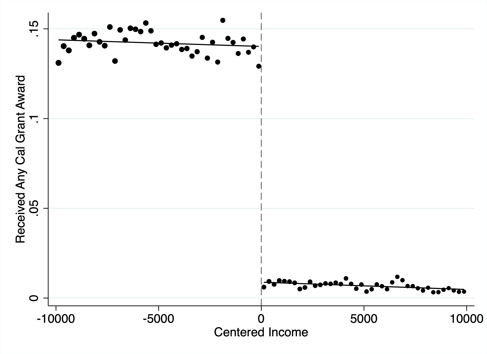
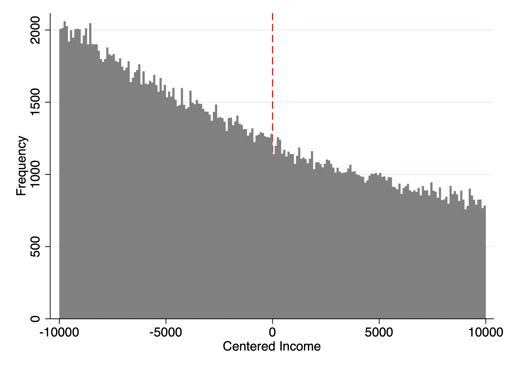
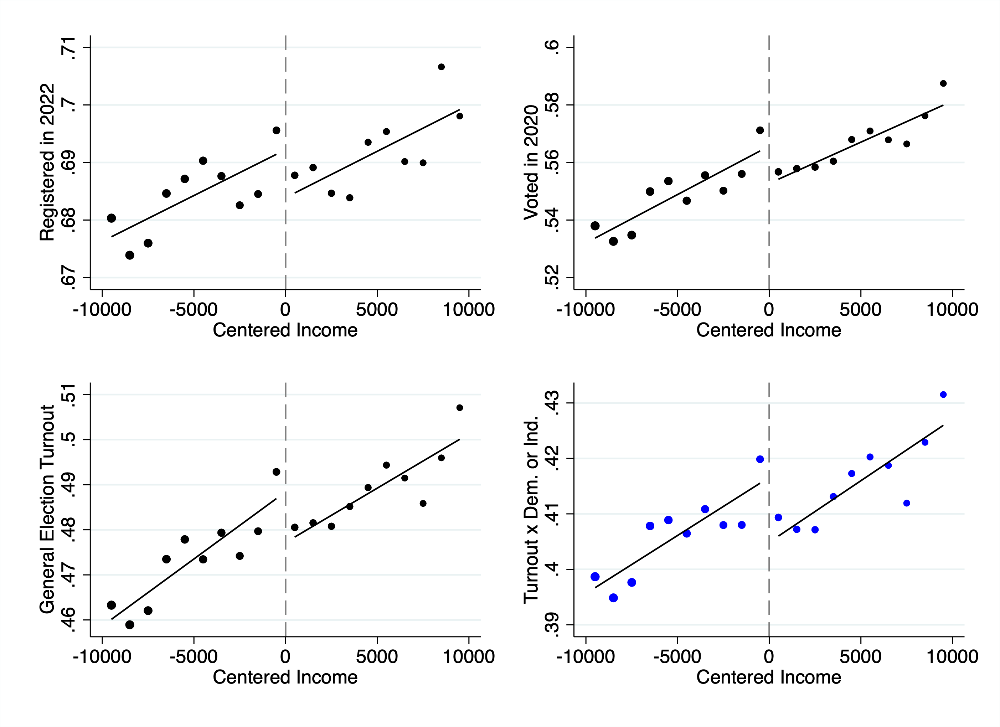
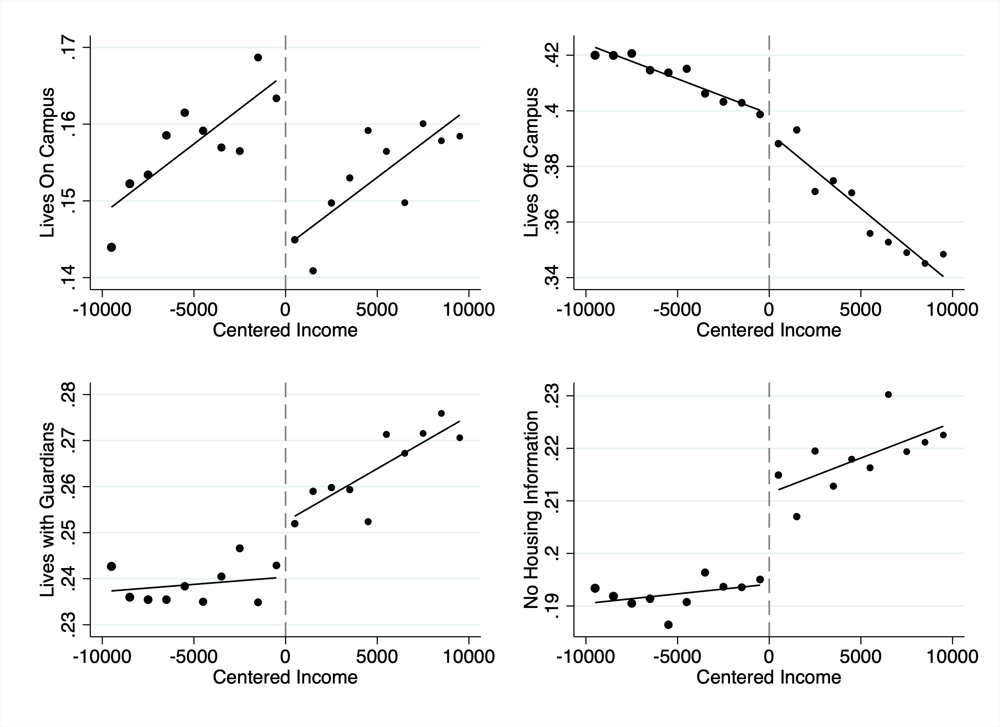
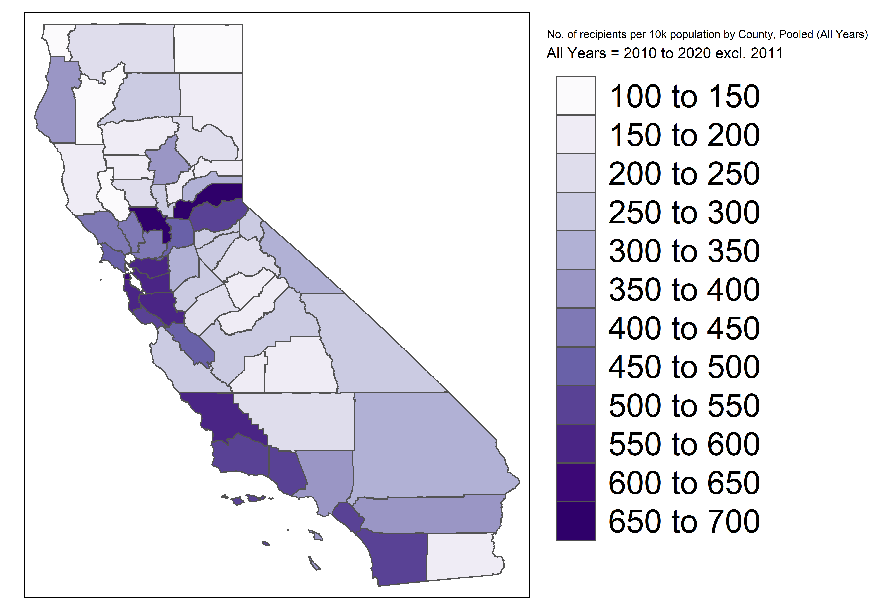

In 2020, roughly 1 in 66 California voters cast a ballot because they received a tuition subsidy. That's 259,000 additional votes—enough to shift statewide margins by half a percentage point.
This finding comes from a paper I co-authored with Daniel Firoozi, published in the American Economic Journal: Economic Policy. The research required linking 16.4 million financial aid applications to voter registration records and deploying a regression discontinuity design to isolate causal effects. This post walks through how we did it.
The Question
Economists from Adam Smith to Milton Friedman justified public education spending partly on the grounds that it produces informed, politically active citizens. But do tuition subsidies actually cause people to vote? The correlation between education and political participation is well-documented, but people who attend college differ from those who don't in unobservable ways. Selection bias contaminates naive comparisons.
We wanted to know: does quasi-experimentally distributing aid for college change the likelihood of a person's political participation (e.g., voting)?
The Setting: California's Cal Grant
California's Cal Grant is the largest tuition-free 4-year college program in the United States. Students who meet income and academic requirements receive four years of free tuition at any in-state public university.
Eligibility hinges on a sharp income cutoff. Families above the threshold are ineligible; families below receive the grant. This creates a natural experiment: students just below the cutoff are nearly identical to students just above, except for their Cal Grant receipt. This is the foundation of a regression discontinuity (RD) design.
Building the Dataset
We needed two things: treatment status (who received a Cal Grant) and outcomes (who voted). Neither exists in a single dataset. Treatment data came from the California Student Aid Commission (CSAC): 16.4 million FAFSA records from 2010-2021 with family income, assets, Cal Grant receipt, housing intent, and GPA. Outcome data came from L2 Inc.'s California voter file: 21 million registered voters with party registration and participation in every election through 2021.
The Linking Problem
Merging these datasets required matching on names and dates of birth. But FERPA prohibits sharing student records with researchers. Our solution: we provided the voter file to CSAC, who performed the match internally and returned de-identified data.
# Conceptual workflow for privacy-preserving record linkage
# (actual matching done by CSAC on their secure servers)
def prepare_voter_file_for_transfer(voter_df):
"""Prepare voter file for secure transfer to data holder."""
match_fields = ['first_name', 'last_name', 'dob']
outcome_fields = ['party', 'voted_2020', 'voted_2018', 'voter_id']
return voter_df[match_fields + outcome_fields]
def receive_matched_data(matched_df):
"""Process de-identified matched data returned by CSAC."""
assert 'first_name' not in matched_df.columns
assert 'last_name' not in matched_df.columns
return matched_df# Conceptual workflow for privacy-preserving record linkage
# (actual matching done by CSAC on their secure servers)
prepare_voter_file_for_transfer <- function(voter_df) {
# Prepare voter file for secure transfer to data holder
match_fields <- c("first_name", "last_name", "dob")
outcome_fields <- c("party", "voted_2020", "voted_2018", "voter_id")
voter_df[, c(match_fields, outcome_fields)]
}
receive_matched_data <- function(matched_df) {
# Process de-identified matched data returned by CSAC
stopifnot(!"first_name" %in% names(matched_df))
stopifnot(!"last_name" %in% names(matched_df))
matched_df
}The match rate was 50-60%. Non-matches include students who moved out of state, never registered, or changed their legal names after marriage.
Sample Restrictions
Not every FAFSA filer is useful for RD. We restricted to students who were California residents, didn't already hold a bachelor's degree, fell below the asset threshold, and had family incomes within $10,000 of the cutoff:
def construct_rd_sample(df, bandwidth=10000):
"""Construct regression discontinuity analysis sample."""
# Center income at eligibility threshold
df['income_centered'] = df['family_income'] - df['income_threshold']
# Apply eligibility restrictions
sample = df[
(df['ca_resident'] == True) &
(df['has_bachelors'] == False) &
(df['assets'] <= df['asset_threshold']) &
(abs(df['income_centered']) <= bandwidth)
].copy()
# Exclude round-number incomes (manipulation concern)
sample = sample[sample['family_income'] % 1000 != 0]
# Treatment indicator: below threshold = eligible
sample['eligible'] = (sample['income_centered'] <= 0).astype(int)
return sample
# Main sample: 258,329 students (2017-2019 cohorts)
# Expanded sample: 738,046 students (2010-2019 cohorts)construct_rd_sample <- function(df, bandwidth = 10000) {
# Construct regression discontinuity analysis sample
df |>
mutate(income_centered = family_income - income_threshold) |>
filter(
ca_resident == TRUE,
has_bachelors == FALSE,
assets <= asset_threshold,
abs(income_centered) <= bandwidth,
family_income %% 1000 != 0 # exclude round numbers
) |>
mutate(eligible = as.integer(income_centered <= 0))
}
# Main sample: 258,329 students (2017-2019 cohorts)
# Expanded sample: 738,046 students (2010-2019 cohorts)The Identification Strategy
Regression Discontinuity: The Intuition
The fundamental problem of causal inference is that we never observe the same person in both treated (i.e. received college aid) and untreated (did not receive aid) states. Randomized experiments solve this by creating comparable groups through random assignment. But what if we can't randomize?
Regression discontinuity (RD) offers one answer. When treatment is assigned based on whether a continuous variable crosses a threshold, people just above and below that threshold are nearly identical—except for treatment status. If you can't precisely control the running variable, falling just above vs. just below the cutoff is essentially random.
Consider two students whose families earn $72,000 and $74,000. These incomes reflect accumulated differences in careers, education, and luck—but the $2,000 gap is noise. If eligibility depends on whether income falls below $73,000, then landing at $72K vs. $74K is plausibly random. One gets the program; the other doesn't. Comparing outcomes gives us a causal effect.
This logic requires one critical assumption: people cannot precisely manipulate the running variable to sort around the threshold. If high-motivation families strategically report income just below the cutoff, the comparison breaks down. We test this directly below.
In our setting:
- Running variable: Family income, centered at the eligibility threshold
- Treatment: Receiving a Cal Grant
- Threshold: The income cutoff, which varies by year and family size (ranging from ~$60,000 to ~$110,000 over our sample period)
Because the threshold changes across cohorts, we center each student's income relative to their applicable cutoff. A student $2,000 below the 2012 threshold is treated the same as one $2,000 below the 2018 threshold—both have centered income of -$2,000. This pooling increases statistical power while preserving the sharp discontinuity at zero.
First Stage
Before estimating effects on voting, we verify that the income threshold actually affects grant receipt:
from rdrobust import rdrobust
def estimate_first_stage(df):
"""Estimate first-stage discontinuity in treatment."""
result = rdrobust(
y=df['received_calgrant'],
x=df['income_centered'],
c=0, # cutoff at centered income = 0
kernel='uniform',
h=10000 # $10,000 bandwidth
)
return result
# First stage coefficient: ~0.25
# Students below threshold are 25pp more likely to receive grantlibrary(rdrobust)
estimate_first_stage <- function(df) {
# Estimate first-stage discontinuity in treatment
rdrobust(
y = df$received_calgrant,
x = df$income_centered,
c = 0,
kernel = "uniform",
h = 10000
)
}
# First stage coefficient: ~0.25
# Students below threshold are 25pp more likely to receive grant Figure 1: First stage discontinuity. Cal Grant receipt probability drops by ~25 percentage points at the income threshold (centered at zero). Each dot represents the local average within an income bin; the lines show fitted values from local linear regressions on either side of the cutoff.
A 25 pp first stage is strong—well above conventional thresholds for weak instruments.
Threats to Identification
RD designs can fail if agents manipulate the running variable, there's selection at the threshold, or differential attrition. We tested for each of these, deploying alternative analyses where possible to ensure the robustness of our results.
Manipulation: We focused on 2017-2019 cohorts, when California used "prior-prior year" income assessment. Families couldn't anticipate the threshold when filing taxes two years earlier. We also excluded round-number incomes.
from rddensity import rddensity
def mccrary_density_test(df):
"""Test for manipulation via density discontinuity."""
result = rddensity(X=df['income_centered'])
# Null: no discontinuity in density
# p > 0.1 suggests no manipulation
return result.pval # Our data: p = 0.50library(rddensity)
mccrary_density_test <- function(df) {
# Test for manipulation via density discontinuity
result <- rddensity(X = df$income_centered)
# Null: no discontinuity in density
# p > 0.1 suggests no manipulation
result$test$p_jk # Our data: p = 0.50
} Figure 2: McCrary density test for manipulation. The histogram shows the distribution of family incomes relative to the eligibility threshold. No discontinuity in density at zero (p = 0.50) indicates families are not strategically manipulating reported income to qualify for the grant.
No bunching at the threshold—the density of observations is continuous across the cutoff.
Attrition: Students above the threshold might leave California at higher rates. We confirmed no discontinuity in pre-treatment voter turnout and null effects on out-of-state registration using a separate dataset.
Balance Tests
For RD to be valid, pre-treatment covariates should be continuous across the threshold:
def run_balance_tests(df, covariates):
"""Test covariate balance across RD threshold."""
results = []
for covar in covariates:
rd = rdrobust(y=df[covar], x=df['income_centered'], c=0)
results.append({
'covariate': covar,
'coefficient': rd.coef,
'pvalue': rd.pval
})
return pd.DataFrame(results)
# Example covariates to test
covariates = ['female', 'gpa', 'assets', 'family_size',
'voted_pre_treatment', 'registered_pre_treatment']
balance_results = run_balance_tests(df, covariates)run_balance_tests <- function(df, covariates) {
# Test covariate balance across RD threshold
map_dfr(covariates, function(covar) {
rd <- rdrobust(y = df[[covar]], x = df$income_centered, c = 0)
tibble(
covariate = covar,
coefficient = rd$coef[1],
pvalue = rd$pv[1]
)
})
}
# Example covariates to test
covariates <- c("female", "gpa", "assets", "family_size",
"voted_pre_treatment", "registered_pre_treatment")
balance_results <- run_balance_tests(df, covariates)The logic is straightforward: run the same RD specification you'll use for outcomes, but substitute each pre-treatment covariate as the dependent variable. If the threshold is truly as-good-as-random, these "placebo" regressions should yield null results. A significant discontinuity in, say, GPA would suggest that higher-achieving students are systematically sorting below the cutoff—a red flag for the design.
We tested 18 covariates including gender, GPA, assets, family size, dependency status, and pre-treatment voter registration. Only 3 showed discontinuities significant at the 90% level—almost exactly what you'd expect by chance alone (18 × 0.10 = 1.8). None of the imbalances were economically meaningful, and our main results are unchanged when we control for all 18 covariates. The design passes.
Results
Main Effects
With the design validated, we can estimate effects on political participation. RD offers two estimands:
-
Reduced-form (intent-to-treat): The effect of eligibility on outcomes. This compares students just below vs. just above the threshold, regardless of whether they actually received a grant. It answers: "What happens when you make someone eligible?"
-
Fuzzy RD (local average treatment effect): The effect of actually receiving the grant, using eligibility as an instrument. This scales the reduced-form effect by the first stage (the jump in grant receipt at the threshold). It answers: "What happens when someone gets the grant because they crossed the threshold?"
The fuzzy RD estimate is larger because it accounts for imperfect take-up—not everyone below the threshold receives a grant, and some above it find other aid. The two specifications are implemented below:
def estimate_reduced_form(df, outcome, bandwidth=10000):
"""Estimate intent-to-treat effect of eligibility."""
return rdrobust(
y=df[outcome], x=df['income_centered'],
c=0, kernel='uniform', h=bandwidth
)
def estimate_fuzzy_rd(df, outcome, bandwidth=10000):
"""Estimate LATE of Cal Grant receipt via 2SLS."""
return rdrobust(
y=df[outcome], x=df['income_centered'],
c=0, fuzzy=df['received_calgrant'],
kernel='uniform', h=bandwidth
)estimate_reduced_form <- function(df, outcome, bandwidth = 10000) {
# Estimate intent-to-treat effect of eligibility
rdrobust(
y = df[[outcome]], x = df$income_centered,
c = 0, kernel = "uniform", h = bandwidth
)
}
estimate_fuzzy_rd <- function(df, outcome, bandwidth = 10000) {
# Estimate LATE of Cal Grant receipt via 2SLS
rdrobust(
y = df[[outcome]], x = df$income_centered,
c = 0, fuzzy = df$received_calgrant,
kernel = "uniform", h = bandwidth
)
} Figure 3: Reduced-form effects on political participation. Each panel shows the discontinuity in a different outcome at the income eligibility threshold. Left: voter registration status as of 2022. Center: turnout in the 2020 presidential election. Right: turnout in any post-treatment general election. Eligible students (left of cutoff) show higher participation across all measures.
Receiving a Cal Grant raises a student's probability of voting in 2020 by approximately 10 percentage points (off a baseline of 56%):
| Outcome | Effect | Baseline |
|---|---|---|
| Registered to vote (2022) | +6.5 pp | 69% |
| Voted in 2020 general | +9.9 pp | 57% |
| Post-treatment turnout rate | +8.4 pp | 49% |
| Ever voted in federal/state general | +8.5 pp | 58% |
Table 1: Fuzzy RD estimates of Cal Grant effects on political participation. "Effect" reports the local average treatment effect (LATE) for compliers—students induced to receive the grant by falling below the income threshold. "Baseline" is the mean outcome for students just above the cutoff. All effects significant at p < 0.05.
How big is 10 percentage points? The get-out-the-vote (GOTV) literature provides useful benchmarks. Gerber and Green's canonical door-to-door canvassing experiments find effects of 6-10 pp per contact—but these decay rapidly and vanish by the next election. Phone calls yield 1-3 pp; direct mail, fractions of a point.
A 10 pp effect that persists across multiple election cycles is exceptional. More comparable are interventions that change life circumstances: preregistration laws raise youth turnout by 2-8 pp (Holbein and Hillygus); residential stability increases turnout by 4-6 pp (Meredith). Our estimate sits at the high end, suggesting financial aid operates through durable channels—educational attainment, civic skills, social networks—rather than the transient activation that characterizes most GOTV treatments.
Robustness
def robustness_checks(df, outcome):
"""Run standard RD robustness checks."""
results = {}
# Vary bandwidth
for bw in [5000, 7500, 10000, 15000, 20000]:
results[f'bw_{bw}'] = estimate_fuzzy_rd(df, outcome, bandwidth=bw)
# Add covariates
results['with_controls'] = rdrobust(
y=df[outcome], x=df['income_centered'], c=0,
fuzzy=df['received_calgrant'],
covs=df[['female', 'gpa', 'assets', 'family_size']]
)
# Quadratic polynomial
results['quadratic'] = rdrobust(
y=df[outcome], x=df['income_centered'], c=0,
fuzzy=df['received_calgrant'], p=2
)
return resultsrobustness_checks <- function(df, outcome) {
# Run standard RD robustness checks
results <- list()
# Vary bandwidth
for (bw in c(5000, 7500, 10000, 15000, 20000)) {
results[[paste0("bw_", bw)]] <- estimate_fuzzy_rd(df, outcome, bw)
}
# Add covariates
results$with_controls <- rdrobust(
y = df[[outcome]], x = df$income_centered, c = 0,
fuzzy = df$received_calgrant,
covs = df[, c("female", "gpa", "assets", "family_size")]
)
# Quadratic polynomial
results$quadratic <- rdrobust(
y = df[[outcome]], x = df$income_centered, c = 0,
fuzzy = df$received_calgrant, p = 2
)
results
}Effects are robust across bandwidth choices, with/without controls, and with bias-aware confidence intervals.
Mechanisms
Why does free tuition make people vote? We tested four hypotheses:
1. Peer Socialization (Supported): Cal Grants increase on-campus living by 17 pp. Effects appear within 2 years and disappear for the 2020-2021 COVID cohort (remote instruction).
 Figure 4: Mechanism test—housing choices. Cal Grant eligibility increases on-campus living by 17 percentage points, consistent with the peer socialization hypothesis. Living on campus exposes students to voter registration drives, political discussions, and civic norms that persist beyond graduation.
2. Voter Reciprocity (Mixed): Students might vote to reward politicians who funded their education. Plausible, but effects are largest in federal elections when state offices weren't on the ballot.
3. Civic Trust (Mixed): Government benefits early in life might increase institutional trust. Consistent with rapid onset and left-leaning registration, but we don't find predicted heterogeneity by race/SES.
4. Income Effects (Not Supported): If voting is a normal good, reducing college costs should increase turnout. But our estimates (0.4-0.8 pp per $1,000) exceed the income-turnout gradient (0.2 pp), and we don't see rightward partisan shifts.
Peer socialization appears most important.
Macro-Level Implications
def calculate_aggregate_impact(
n_grants=2_600_000,
treatment_effect=0.10,
pct_dem_indie=0.80,
pct_vote_biden=0.80
):
"""Calculate aggregate electoral impact."""
additional_voters = n_grants * treatment_effect
additional_dem = additional_voters * pct_dem_indie * pct_vote_biden
additional_rep = additional_voters * (1 - pct_dem_indie) * 0.80
return {
'additional_voters': additional_voters, # 259,000
'margin_impact': additional_dem - additional_rep, # 168,000
'pct_of_electorate': additional_voters / 17_500_000
}calculate_aggregate_impact <- function(
n_grants = 2600000,
treatment_effect = 0.10,
pct_dem_indie = 0.80,
pct_vote_biden = 0.80
) {
# Calculate aggregate electoral impact
additional_voters <- n_grants * treatment_effect
additional_dem <- additional_voters * pct_dem_indie * pct_vote_biden
additional_rep <- additional_voters * (1 - pct_dem_indie) * 0.80
list(
additional_voters = additional_voters, # 259,000
margin_impact = additional_dem - additional_rep, # 168,000
pct_of_electorate = additional_voters / 17500000
)
}We call these assumptions "conservative" because each parameter likely understates the true effect: we use the lower-bound treatment effect (10 percentage points rather than 16.4), assume only 80% of induced voters lean Democratic (matching California's young adult registration), and apply an 80% Biden vote share among that group. Under these parameters, the 2.6 million Cal Grants awarded since the program's expansion induced roughly 259,000 additional votes in 2020—raising California's turnout rate by about 1 percentage point and increasing Biden's margin by approximately 0.5 percentage points. Put differently, 1 in 66 California voters cast a ballot because of the Cal Grant
 Figure 5: Geographic distribution of Cal Grant recipients by county. Darker shading indicates higher recipient counts. The program's electoral impact concentrates in counties with UC and CSU campuses—Los Angeles, San Diego, the Bay Area—which are also the state's most competitive suburban districts.
Effects concentrate in counties with public research universities—precisely the educated suburbs trending Democratic.
Methodological Takeaways
Data acquisition: Large-scale causal inference often requires linking administrative datasets while navigating privacy regulations. Having the data holder perform the match—as we did with CSAC—is one template.
Fuzzy RD in practice: With 16.4 million observations, we estimate effects precisely even with a 25 pp first stage. The limitation is that RD identifies a LATE for compliers near the threshold. We validated external validity via similar Pell Grant effects.
Voter data challenges: Migration, name changes, and registration churn introduce unique threats. Focus on recent cohorts and cross-validate with other sources.
Applying RD to Your Own Projects
Once you start looking for regression discontinuities, you'll find them everywhere. Medicaid eligibility turns on income. School funding formulas create discontinuities at enrollment cutoffs. Pollution regulations kick in when firms exceed size thresholds. Credit approvals depend on score cutoffs. The world is full of arbitrary lines, and RD lets you exploit them.
The crucial question isn't whether a cutoff exists—it's whether people can manipulate their position relative to it. Age-based cutoffs are ideal because you can't choose your birthday. Income cutoffs work well when reported by employers or the IRS, less well when self-reported. Test score cutoffs are trickier—students might retake exams or teachers might massage grades. The more control agents have over the running variable, the more skeptical you should be.
Before trusting any RD estimate, validate the design. The McCrary density test is your first defense: plot the histogram of your running variable and look for bunching at the threshold. If families are gaming the cutoff, you'll see a spike just below. You also need balance tests—regress pre-treatment covariates on the running variable. If students just below the threshold have systematically higher GPAs than those just above, this is an indication that further investigation is warranted.
Bandwidth selection involves a bias-variance tradeoff. A narrow bandwidth keeps you close to the cutoff where comparison is most credible, but estimates will be noisy. A wide bandwidth gives more power but you're comparing people who might differ in unobserved ways. The rdrobust package implements optimal bandwidth selection; use it as your baseline, then show robustness to narrower and wider choices.
Most applications involve fuzzy rather than sharp discontinuities. In sharp RD, crossing the threshold perfectly determines treatment—you can drink at 21, not at 20. In fuzzy RD, crossing the threshold changes the probability of treatment. Our setting is fuzzy: falling below the income cutoff increases Cal Grant receipt, but not all eligible students take it up. Fuzzy RD uses the threshold as an instrument, estimating via 2SLS. The interpretation shifts to a local average treatment effect (LATE) for compliers.
A few pitfalls: RD identifies effects at the threshold—don't extrapolate without testing for heterogeneity. Resist high-order polynomials; they chase noise and don't replicate. If your program has multiple eligibility criteria (income AND assets AND GPA), you're in multivariate RD territory—see Papay, Willett, and Murnane (2011). And RD assumes a continuous running variable; with discrete values, cluster standard errors carefully.
For deeper reading: Angrist and Pischke's Mostly Harmless Econometrics (Chapter 6) is the canonical treatment. Cunningham's Causal Inference: The Mixtape is free online. The rdrobust package (R and Python) handles estimation and visualization; rddensity tests for manipulation. Cattaneo, Idrobo, and Titiunik's Cambridge Elements guides are the definitive modern references.
Published as "Tuition-Free College and Political Participation: Evidence from California's Cal Grant Program" in the American Economic Journal: Economic Policy. Co-authored with Daniel Firoozi.